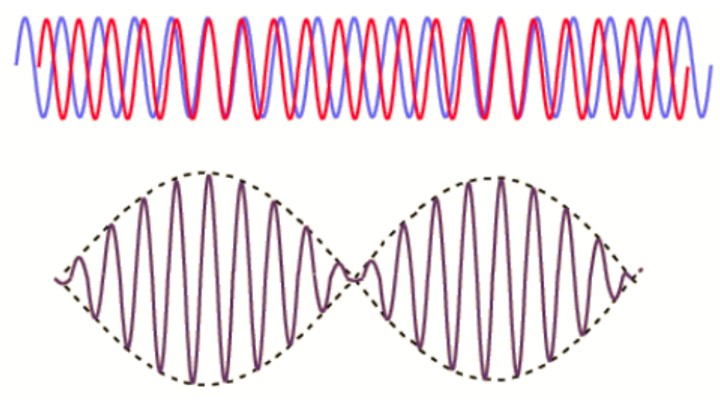
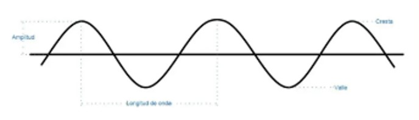
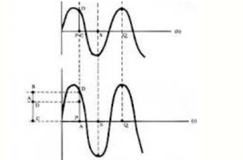

BATIMIENTO
VARIACIÓN PERIÓDICA EN AMPLITUD EN UN PUNTO DADO DEBIDO A LA SOBRE POSICIÓN DE 2 ONDAS QUE TIENEN LIGERAMENTE DIFERENTESFrecuencia
Frecuencia de Batido

FRECUENCIA DE ONDA
NÚMERO DE OSCILACIONES EN UN PERIODO DE TIEMPO.
FRECUENCIA DE BATIDO
NUEVA ONDA CON UNA FRECUENCIA IGUAL A LA DIFERENCIA DE FRECUENCIAS DE LAS OTRAS ONDAS.
MECANISMOS DE BATIMIENTO
El batimiento ocurre cuando dos ondas cercanas en frecuencia se superponen, generando fluctuaciones en la amplitud y creando un sonido con pulsaciones armónicas. el oído humano detecta hasta aproximadamente 20 pulsaciones por segundo.
Aplicaciones tecnológicas
SINTONIZACIÓN DE LOS INSTRUMENTOS
Los batimientos ayudan a afinar. Dos tonos diferentes crean batimientos. Al ajustar un tono, los batimientos desaparecen y el instrumento se afina.
DEMODULACIÓN
¿Qués es la demodulación?
Básicamente, es el proceso de "desempaquetar" la información que se
"empaquetó" durante la modulación. Se necesita para entender y usar la información transmitida.